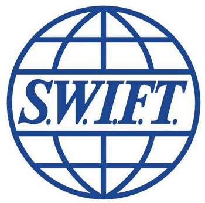

“Le succès c’est d’aller d’échec en échec sans perdre son enthousiasme.”—Winston Churchill
Elle travaille actuellement chez Swift
S.W.I.F.T = Society for Worldwide Interbank Financial Telecommunication.
C'est un réseau de télécommunication privé créé le 03 mai 1973 par 239 banques de 15 pays.
Ils ont 4 secteurs d'activités: "Secteur bancaire,Titres,Entreprises,Infrastructures de marché."
Manu | Tous droits réservés